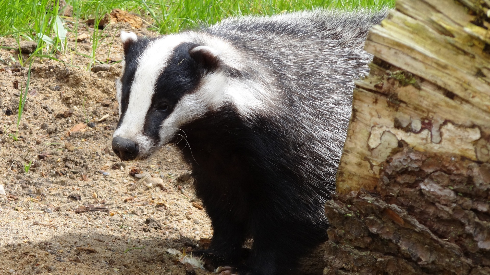

Powrót
Zachowanie borsuków
Borsuki są zwierzętami nadrzewnymi.
Spędzają większość czasu na poszukiwaniu pożywienia.
Mają tendencję do kopania nory w ziemi lub w korzeniach drzew.
Są samotnikami i są territorialne.
